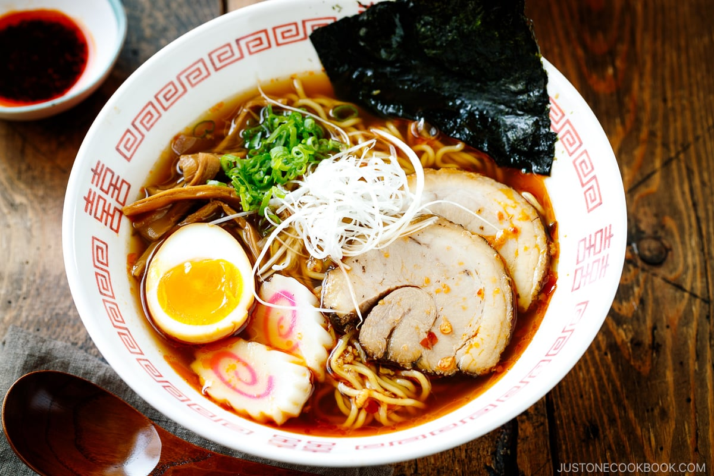

Ramen

Ramen ist eine traditionelle japanische Suppe, die für ihren reichen Geschmack und ihre vielfältigen Zutaten bekannt ist
Sie besteht aus Weizennudeln, die in einer Fleisch- oder Fischbrühe serviert werden und oft mit Sojasauce oder Miso gewürzt sind.
Die Suppe wird typischerweise mit einer Vielzahl von Zutaten belegt, darunter Scheiben von gebratenem Schweinefleisch (Chashu), Frühlingszwiebeln, Nori (Seetang), Menma (fermentierter Bambus), und manchmal auch Mais oder Butter. Eine Besonderheit von Ramen ist das Ajitsuke Tamago, ein weich gekochtes Ei, das in Sojasauce und Mirin mariniert wurde.
Es gibt viele regionale Variationen von Ramen in Japan, von der leichten, salzigen Hakata-Ramen aus Fukuoka bis zur reichen, cremigen Sapporo-Ramen aus Hokkaido. Jede Ramen-Art bietet ein einzigartiges Geschmackserlebnis, das die lokale Kultur und Küche widerspiegelt. Ramen ist mehr als nur eine Mahlzeit - es ist ein Ausdruck der japanischen Esskultur.
Zutaten
- Ramen-Nudeln (4 Portionen)
- Hühner- oder Schweinebrühe (8 Tassen)
- Sojasauce (1/2 Tasse)
- Miso-Paste (2 Esslöffel)
- Schweinefleisch (500 Gramm)
- Frühlingszwiebeln (4 Stück)
- Nori (Seetang) (4 Blätter)
- Menma (fermentierter Bambus) (1 Tasse)
- Ajitsuke Tamago (weich gekochtes Ei) (4 Eier)
- Mais oder Butter (optional)
Zubereitung
- Das Schweinefleisch in dünne Scheiben schneiden und in einer Pfanne anbraten, bis es knusprig ist.
- Die Hühner- oder Schweinebrühe in einem großen Topf zum Kochen bringen.
- Sojasauce und Miso-Paste in die Brühe einrühren.
- Die Ramen-Nudeln nach den Anweisungen auf der Verpackung kochen und abtropfen lassen.
- Die Nudeln auf vier Schüsseln verteilen und mit der heißen Brühe übergießen.
- Jede Schüssel mit Scheiben von gebratenem Schweinefleisch, Frühlingszwiebeln, Nori, Menma und einem Ajitsuke Tamago belegen.
- Optional mit Mais oder Butter garnieren.
- Sofort servieren und genießen.
Guten Appetit! 🍜